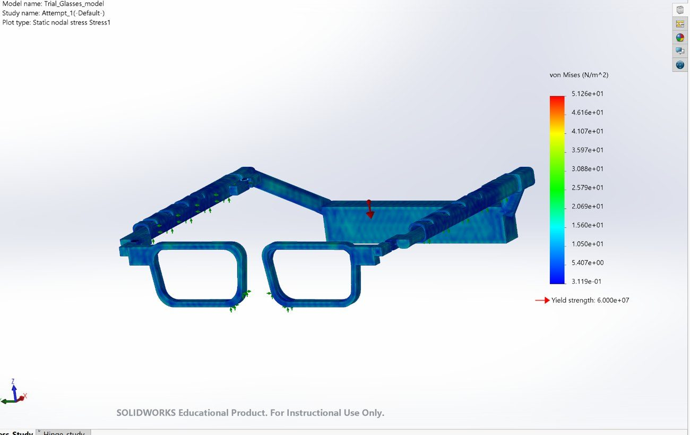
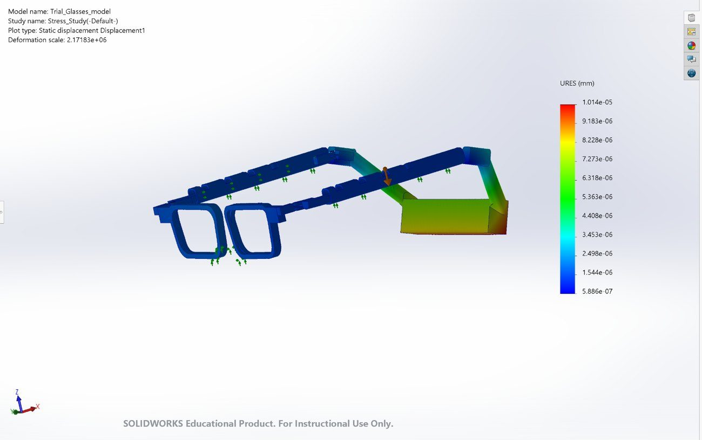
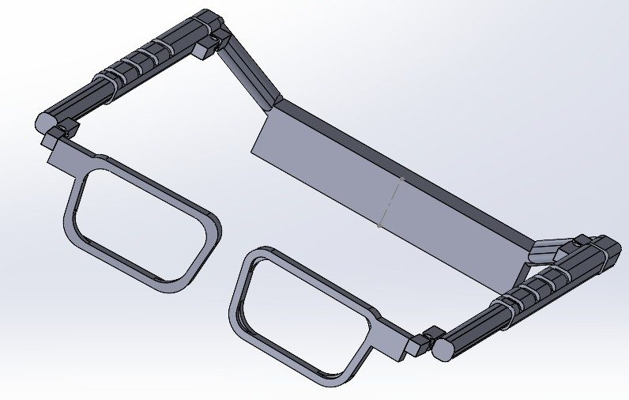
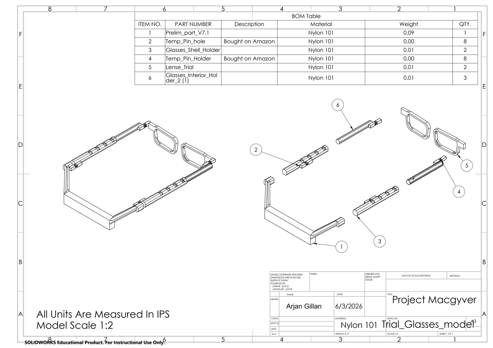

Traditional eyeglasses rely on the nasal bridge for support, a problem for people recovering from nasal surgery, with saddle-nose or congenital nasal conditions, or whose facial structure makes glasses uncomfortable. Our team designed a pair of bridgeless eyeglasses that removes the nose from the load path entirely, redistributing the frame's weight to the sides and back of the head through extended, adjustable temple arms. We took it from problem definition through materials selection, CAD, FEA validation, and a working 3D-printed prototype.

- Bridgeless frame: support comes from the temples and behind the ears instead of the nose, wrapping toward the occipital region.
- Adjustable fit: a spring-loaded interior holder slides within the shell holder, with a ball-detent mechanism so the user can size the arms to their own head circumference.
- Validated: FEA confirmed stresses stay well within the material's yield strength under the frame's own weight; motion studies confirmed the hinges and extension mechanism clear and function.
Our team worked through each stage together, from problem definition and materials selection to CAD, simulation, and building the prototype. The engineering skills we used:
- CAD modeling: the parts and assembly in SolidWorks (shell holder, interior sliding holder, hinges, and lens frame) with full dimensioned engineering drawings.
- FEA (static): fixtures and loads set up to model the real case (roller/slider at the temples, gravity on a 58.9 g / 0.58 N frame), running static stress, strain, and displacement studies with soft-spring and inertial-relief settings to stabilize the assembly-level analysis.
- Motion studies: hinge-fold and arm-extension studies to verify mechanical clearance and the adjustable-length mechanism.


- Ashby-chart screening: used Ansys Granta EduPack and the "beam in bending" performance index (M = E1/2/ρ) to screen for stiff-yet-lightweight materials, narrowing from all materials down to the polymers class.
- Prototype vs. production: prototyped in PLA (cheap, stiff, easy to 3D-print on campus), then used a level-3 Granta database with a durability limit to select PA12 (Nylon 12) for a production frame, flexible enough to conform to the head, with the elongation to flex without snapping and common use in medical/optical applications.

